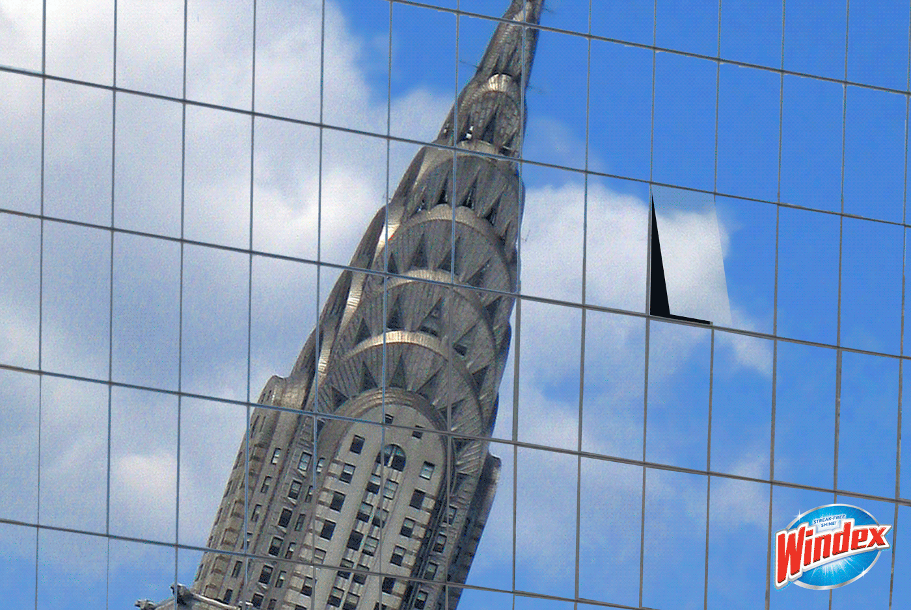

WINDEX
PROJECT DESCRIPTION
Windex's products are all about cleaning surface. What if a building's windows just as clean as a mirror? Or maybe it just makes the whole building disapear? Anyhow, all we can see is the blue sky.
Project Director: Jamie Massam
Project Director: Jamie Massam
MOCK UP
ORIGINAL WORK
SKETCHES
Here is the graphic progress of the advertising.

I started my sketch with focusing on clean and difference. And I end up develop the how to make the building disapear idea. (bottom left)
Before I put my hand on my laptop, I did a lot of sketches and here is one of them. During my research, I found out Windex products are mostly focusing on the idea of cleaning surface, for example the ad that the bird hate windex because windex makes the window so clear that the birds thought it's an open window. So I thought about money laundry, new way to become a monk - they are bald; or show those cute cat slide down from the table etc.
Then I found out since the ad will be place on New York subway, I thought about all the tall buildings with glass widows and the magic show that the magician has a hole in the middle of his body which is an illusion that creative by mirror reflection. So I came out the idea of what is the building is so clean that it can literally reflect the image of the sky.